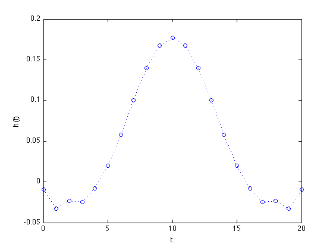
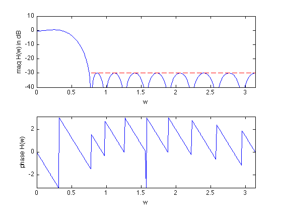

% "Filter design" lecture notes (EE364) by S. Boyd % (figures are generated) % % Designs a linear phase FIR lowpass filter such that it: % - minimizes the maximum passband ripple % - has a constraint on the maximum stopband attenuation % % This is a convex problem. % % minimize delta % s.t. 1/delta <= H(w) <= delta for w in the passband % |H(w)| <= atten_level for w in the stopband % % where H is the frequency response function and variables are % delta and h (the filter impulse response). % % Written for CVX by Almir Mutapcic 02/02/06 %******************************************************************** % user's filter specifications %******************************************************************** % filter order is 2n+1 (symmetric around the half-point) n = 10; wpass = 0.12*pi; % passband cutoff freq (in radians) wstop = 0.24*pi; % stopband start freq (in radians) atten_level = -30; % stopband attenuation level in dB %******************************************************************** % create optimization parameters %******************************************************************** N = 30*n+1; % freq samples (rule-of-thumb) w = linspace(0,pi,N); A = [ones(N,1) 2*cos(kron(w',[1:n]))]; % matrix of cosines % passband 0 <= w <= w_pass ind = find((0 <= w) & (w <= wpass)); % passband Ap = A(ind,:); % transition band is not constrained (w_pass <= w <= w_stop) % stopband (w_stop <= w) ind = find((wstop <= w) & (w <= pi)); % stopband Us = 10^(atten_level/20)*ones(length(ind),1); As = A(ind,:); %******************************************************************** % optimization %******************************************************************** % formulate and solve the linear-phase lowpass filter design cvx_begin variable delta variable h(n+1,1); minimize( delta ) subject to % passband bounds Ap*h <= delta; inv_pos(Ap*h) <= delta; % stopband bounds abs( As*h ) <= Us; cvx_end % check if problem was successfully solved disp(['Problem is ' cvx_status]) if ~strfind(cvx_status,'Solved') return else % construct the full impulse response h = [flipud(h(2:end)); h]; fprintf(1,'The optimal minimum passband ripple is %4.3f dB.\n\n',... 20*log10(delta)); end %******************************************************************** % plots %******************************************************************** figure(1) % FIR impulse response plot([0:2*n],h','o',[0:2*n],h','b:') xlabel('t'), ylabel('h(t)') figure(2) % frequency response H = exp(-j*kron(w',[0:2*n]))*h; % magnitude subplot(2,1,1) plot(w,20*log10(abs(H)),[wstop pi],[atten_level atten_level],'r--'); axis([0,pi,-40,10]) xlabel('w'), ylabel('mag H(w) in dB') % phase subplot(2,1,2) plot(w,angle(H)) axis([0,pi,-pi,pi]) xlabel('w'), ylabel('phase H(w)')
Calling sedumi: 884 variables, 606 equality constraints ------------------------------------------------------------ SeDuMi 1.21 by AdvOL, 2005-2008 and Jos F. Sturm, 1998-2003. Alg = 2: xz-corrector, Adaptive Step-Differentiation, theta = 0.250, beta = 0.500 Split 12 free variables eqs m = 606, order n = 860, dim = 934, blocks = 38 nnz(A) = 1330 + 6814, nnz(ADA) = 1286, nnz(L) = 946 Handling 24 + 0 dense columns. it : b*y gap delta rate t/tP* t/tD* feas cg cg prec 0 : 4.89E-02 0.000 1 : 6.36E+00 9.87E-03 0.000 0.2019 0.9000 0.9000 -0.43 1 1 2.9E+00 2 : 1.94E+00 5.09E-03 0.000 0.5157 0.9000 0.9000 4.74 1 1 4.2E-01 3 : 1.15E+00 3.34E-03 0.000 0.6558 0.9000 0.9000 9.02 1 1 6.5E-02 4 : 1.08E+00 1.96E-03 0.000 0.5865 0.9000 0.9000 2.40 1 1 2.8E-02 5 : 1.06E+00 1.12E-03 0.000 0.5714 0.9000 0.9000 1.65 1 1 1.4E-02 6 : 1.05E+00 4.73E-04 0.000 0.4224 0.9000 0.9000 1.41 1 1 5.2E-03 7 : 1.05E+00 1.18E-04 0.000 0.2501 0.9000 0.9000 1.19 1 1 1.2E-03 8 : 1.05E+00 4.38E-05 0.000 0.3703 0.9000 0.9000 1.05 1 1 4.5E-04 9 : 1.05E+00 7.92E-06 0.000 0.1810 0.9000 0.0000 1.01 1 1 2.6E-04 10 : 1.05E+00 1.80E-06 0.000 0.2274 0.9166 0.9000 1.01 1 1 7.3E-05 11 : 1.05E+00 5.21E-07 0.000 0.2895 0.9000 0.8557 1.00 1 1 2.0E-05 12 : 1.05E+00 1.98E-07 0.000 0.3797 0.9035 0.9000 1.00 2 2 7.9E-06 13 : 1.05E+00 6.25E-08 0.000 0.3158 0.9000 0.8355 1.00 2 3 2.4E-06 14 : 1.05E+00 1.63E-08 0.000 0.2609 0.9000 0.9000 1.00 4 4 6.4E-07 15 : 1.05E+00 3.20E-09 0.000 0.1963 0.9000 0.9000 1.00 5 5 1.2E-07 16 : 1.05E+00 2.20E-10 0.000 0.0687 0.9900 0.9900 1.00 7 7 8.6E-09 iter seconds digits c*x b*y 16 0.3 Inf 1.0515780150e+00 1.0515780156e+00 |Ax-b| = 4.8e-08, [Ay-c]_+ = 3.5E-09, |x|= 1.2e+01, |y|= 1.2e+00 Detailed timing (sec) Pre IPM Post 1.000E-02 2.700E-01 0.000E+00 Max-norms: ||b||=1, ||c|| = 1, Cholesky |add|=6, |skip| = 2, ||L.L|| = 1. ------------------------------------------------------------ Status: Solved Optimal value (cvx_optval): +1.05158 Problem is Solved The optimal minimum passband ripple is 0.437 dB.
 